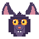

Обитатели двора нажми на карточку

Магистр Коко
Хитрый маг. Автор слишком доброго заклинания. Отвечает за звуки и тоны.
Скелетик Костик
Первый воскрешённый. Бывший учитель каллиграфии. Ваш гид по двору.
Призрак Люми
Смотритель фонарей. Единственный, кто помнит, где висят Фонарики Памяти.

Мышь Эхо
Жительница колокольни. Сто лет слушала звуки — и помнит их все.